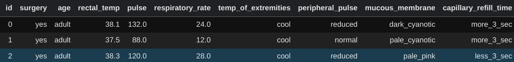
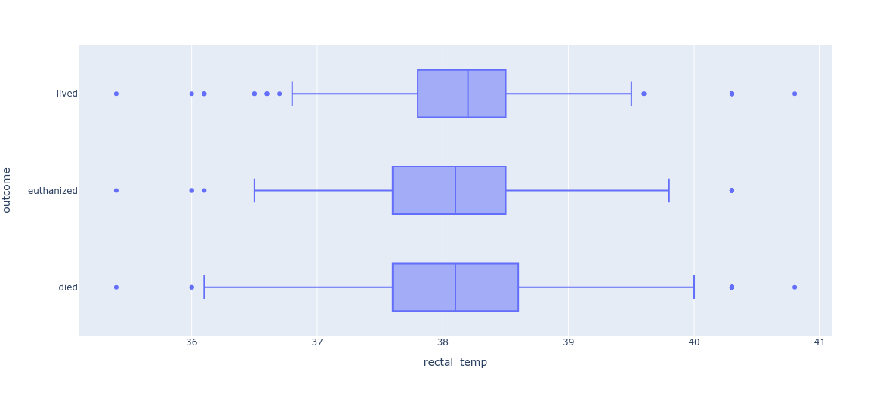
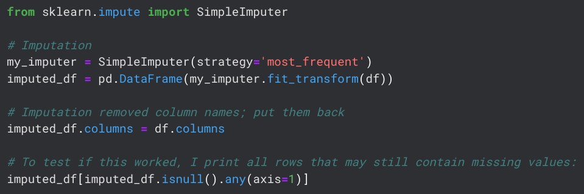
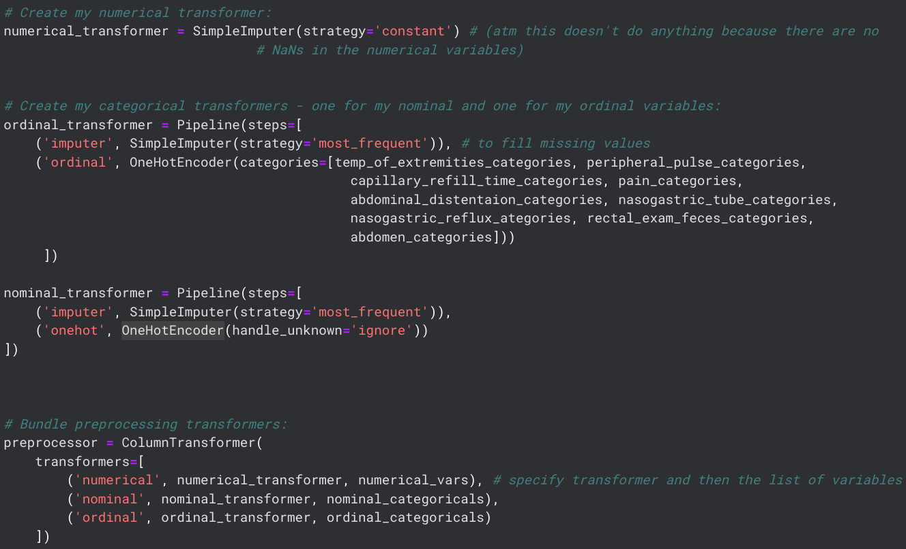
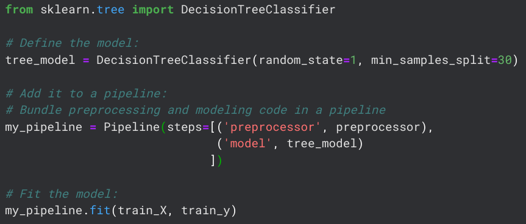
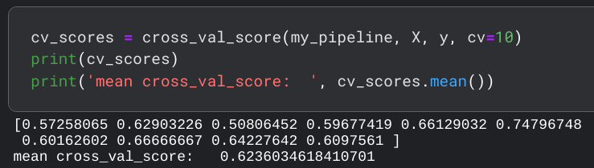
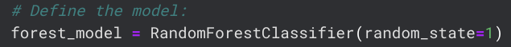
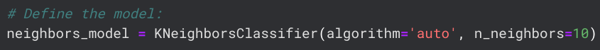
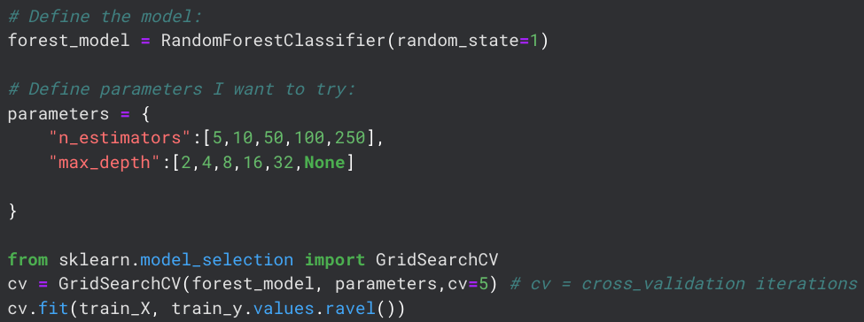

Kaggle Horse Classification Challenge
Predicting Health Outcomes for Horses
Project Outline
This project describes a Kaggle Challenge that asked participants to predict whether horses survived, died, or were euthanized following health complications. The challenge can be found here.The first step in this project was to examine the data. The dataset contains 29 columns and 1235 rows.
I decided to drop six of the columns because they contained data that was collected after the horse's health
outcome was already observed. Thus, including these features would have led to target leakage.
This left me with 22 features and one target variable.

Exploratory Data Analysis (EDA)
I examinined the variable types and their rough distributions. The prediction target is a nominal variable with three categories: lived (574 cases), died (410 cases), and euthanized (251 cases).Using Plotly Express, I created several visualizations, an example of which is the following boxplot showing the horses' rectal temperatures, divided into the target categories.

Missing Values
The Kaggle Challenge claimed that there were no missing values in the data. That, however, is not correct. There were a total of 464 rows containing at least one missing value. All missing values occurred in categorical features, so I chose to impute them with that feature's most frequent value: Recoding Categorical Variables
The data contained many categorical features, which would be a problem for my machine-learning modelling. Thus, I decided to encode those features using two methods:I defined custom orderings for my ordinal variables (I was using the Scikit Learn library, which would have ordered my variables alphabetically by default) and then defined my two encoders. For ease of use, all data pre-processing steps were added into a Column Transformer using the following code: 
Model 1: Decision Tree Classifier
I tried three different models, the first being a simple Decision Tree. Using cross-validation, the model achieved an average accuracy of about 62%. 
Model 2: Random Forest
To get better accuracy, the next model I tried was a Random Forest. The model achieved an average accuracy of about 69%, which is a decent improvement.
Model 3: K Nearest Neighbors
The final model I wanted to try was a KNN model. Unfortunately, this model scored the worst, only getting an average accuracy of 61%.
Model Choice and Submission
The Random Forest model scored best and will be used for the competition. However, I also want to try and tune the model parameters to improve the accuracy. For this, I follow a tutorial by datascienceLearner, found here.The parameters I will be tuning are n_estimators and max_depth. Using GridSearchCV, I try several different values: 
Ultimately, the data concludes that the optimal parameters are max_depth=4 and n_estimators=100. Using these values, the final model scores an average accuracy of 67%, which is worse than using default parameters. Parameter tuning is a topic that I do not have any experience with yet, so I use the default parameters for now. However, I have learned how vital a good understanding of hyperparameters is and I am putting it on my to-do list for further study.